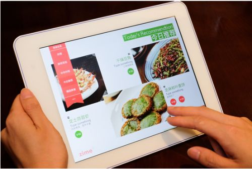

400-500-8888
时间：2016-04-21

直至今日沙水依然坚持一个观点：餐饮的本质在线下，口味、价格与环境将两两独立组合形成新的差异化定位。传统餐饮人经过这两年的洗礼已经逐渐的化，玩法也开始丰富多样起来，而互联网人做餐饮成功者少，但是互联网餐饮模式正在发扬光大。以下大部分内容是我今年初就2015年餐饮O2O发展趋势做的前瞻预测分析，现在看来正在逐步变成现实。
线下餐饮人已经准备逆袭
互联网只是一种工具。餐饮O2O被吹得再牛也得回归到本质。线上的部分就像浮云，线下的部分才是真的神马。既然餐饮O2O是一种互联网的思维方式，传统餐饮人现在也逐渐看清看透和理解这种模式，积极拥抱的同时还在不断创造，绝对比野蛮人入侵餐饮时的自负来得底气十足，胜算更高。
凡是你所见到的听到的互联网做得好的餐厅，都是对餐饮O2O有深刻理解的，但他们做得好很多时候可能真与餐饮O2O没有半毛钱关系，例如海底捞火锅。对互联网人来说，谈起O2O就是闭环，从下单到支付，不打通整个人就有些不好的感觉；对餐饮人来说，闭环不闭环的没关系，钱进账了而且都是我的就好，但是亲，你只要让我知道用户从哪里来就好。
餐饮人的逆袭绝不是依靠所谓的餐饮O2O，而是口碑创造。所以凡是那些你所见到的听到的觉得不错的餐厅，都来源于第三方的口碑。餐饮人的聪明之处就在于理解了餐饮O2O营销的本质后，直接将焦点对准到了各种有利于口碑传播的技术、方法及合作之上。
于是乎，你的都是我的，我的还是我的。更有甚者，如北京五星级标准服务的高端餐饮品牌北京宴，2014年逆势大涨，营收翻番，2015年还要进军食材电商，十分与时俱进！而且北京宴还获得了大名鼎鼎的Star VC的，并且全程操办了黄晓明与Anglelababy豪华婚礼，足见五星级服务的实力。说完高大上的北京宴，再说说更亲民一点的金百万烤鸭，全新上线了一个“筷好味”的外卖品牌，据说估值由此翻了几倍，这不是重点，重点是传统餐饮人已经逐渐觉醒，开始把自己擅长的部分主动去插上互联网的翅膀，这是真的自下而上的准备逆袭。
餐饮的转型要靠模式突破
第一点提到的餐饮人准备逆袭与尝试模式创新，主要是经过2014年的思想冲击，他们在思维模式上已经逐渐转变，跟互联网人接近了同一轨道。但是客观来分析，餐饮的转型跟市场环境和政策背景也有着莫大的关系。所谓牵一发而动全身，环境变了，经营模式必然发生改变以适应新的形势。
政策方面，中央出台了严禁公款吃喝的各项规定之后，高端餐饮市场一落千丈。俏江南易主，湘鄂情关店，各大高端餐饮品牌纷纷寻求转型。市场方面，大众餐饮市场发展红火，小而美的品牌获得年轻消费群体的青睐，基于不同消费群体的市场细分日益明显，品牌的价值和认同感开始显现。
我们以知名的外婆家作为案例。外婆家餐厅身上有几大核心标签——环境好、价格低，性价比高，要排队。但是外婆家的菜品口味和餐厅服务跟其他餐厅相比并没有胜出的地方，当然保证了不差。 另外，外婆家旗下还有另外两个新晋品牌——炉鱼、动手吧。炉鱼，闻其名就知道是吃烤鱼的地方，几个月前首度进京，沙水之前的团队参与了开业营销策划，巨大而形似UFO的烤炉很惹眼，绝对的单品为王，绝对的高性价比。
从外婆家的品牌策略我们就能发现，餐厅的管理模式和经营理念是可以快速复制的，这是餐厅管理和服务的前提保障。接下来，针对不同的目标人群，各子品牌的定位是有差异化的，目标顾客是精准的，并且对应的品牌是有调性的，是符合特定目标人群的需求的。外婆家如此，湖南知名餐饮品牌57度湘也是如此。57度湘旗下有中高端餐饮品牌海食上、创新湘菜铁板烧品牌57度湘、青年餐厅品牌好食上、时尚主题餐厅水货、主题单品品牌我爱鱼头等，均广受市场欢迎。如果将57度湘的品牌策略与外婆家相比，你会发现惊人的相似，其他人学不会是因为思维模式学不会，加上餐饮管理与服务跟不上，二者缺一不可。
餐饮转型成功的三要素
之前沙水谈餐饮O2O的时候会反复强调一件事——餐饮企业一定要修炼好口味和服务的内功，最大化保证用户线下就餐的体验，这是餐饮O2O的基础。现在认真琢磨，越来越发现这是一句绝对正确的废话，因为这是共识，是基础，做好了是理所应当，做不好是千夫所指。对于餐饮转型成功而言，做到基础性共识的要求是远远不够的，还必须做好以下三点：
有调性
调性这词我们听过很多次，但未必真能理解清楚，听起来还有些小清新小朦胧。餐厅的调性基于环境，基于装修设计，是餐厅给用户的第一印象，第一感觉。如果说用户到了你的店里，只需要一眼就对你产生了情感的共鸣，嘿嘿，恭喜你中彩蛋了。这种冥冥之中心有灵犀的一见钟情就是有调性，即品牌的定位一定要抓住某一类人群的某一个共同偏好或情感共鸣，做足恋爱攻略，做到知己知彼，才会收获邂逅时驻足的回眸。所以，设计也应该融入餐厅发展战略中，成为重要的一环。
营造归属感
说调性大家不太懂，谈感觉大家都在行，这就是接地气的好处，一定要现真情。归属感也是如此。俗一点来说，归属感就是你一见钟情了一个有感觉的女子，然后有种怦然心动的感觉。各位客观听明白了吗？换个雅一点的表述就是——归属感是品牌塑造的最高境界，让用户与品牌用情感紧紧连接在一起，水乳交融，难舍难分，犹如热恋中的情侣，心里想的的嘴里说的都是她的好。
创造口碑
口碑这东西也有点悬乎，大家都在说口碑，但口碑怎么创造却见仁见智，更不得要领。接着上面的泡妞大法来说，当一见钟情了一个有感觉的女子后，我们便会被吸引，时时惦记。甚至会情不自禁的逢人就说，恨不得全世界都知道她的好，她对你的重要。口碑也是如此，这是内心隐匿的感觉被激发的快乐，是一种情不能自已的释放。
这个故事想要告诉大家的是——口碑是品牌美誉度的表现，调性和归属感都是品牌传递给用户内化的感觉，满足用户本质需求的东西，这是品牌存在的价值与根本。但口碑是品牌在满足用户需求带给他们价值后，期待用户能情不自禁“大声向世界宣布”的外化表现，也是品牌能够对外施加影响力，获得持续发展的最佳方式。
从这三要素层面来说，餐饮业的转型绝不仅仅只是停留在传统的口味、环境和价格之上。传统的三要素只是基础，而有调性、营造归属感与创造口碑才是新趋势下餐饮企业转型需要去认真研究与求证的。归根结底餐饮企业的转型要落实到品牌上来，而最打动人的品牌都离不开一个词——情感共鸣！
线上餐饮互联网请忘记营销
做餐饮O2O的互联网公司很多，但是真正把餐饮O2O这件事做好了，做到餐饮商家心坎里去的真的很少很少，最近很火的人人湘米粉算是少有的一个。互联网只是一种工具，营销只是一种手段，同样的工具和手段在不同的人用起来就是完全不一样，这个是客观事实。
所以沙水之前也一直在强调说“授人以鱼不如授人以渔”，这个学费是餐饮人需要交的，但是学习成本是跟付出时间成反比的，所以餐饮与互联网的融合只是时间问题。那么问题来了！互联网人到底应该为餐饮商家创造什么价值呢？
具体来说，互联网人能为餐饮商家提供的服务有：餐饮O2O营销培训（此类忽悠的多，例如之前出现过一阵的微信营销培训），集成了预订、点菜、支付、营销、顾客管理与数据分析的餐饮管理系统（这个比较靠谱，还是人人湘真正实现了这一点），各类团购或代金券营销（后续再表），餐饮外卖服务（快餐有需求，正餐如火锅外卖等市场太小，杯水车薪），餐饮品牌营销推广（很多时候花的是冤枉钱），还有就是基于微信公众号或微信连WIFI服务为商家提供的近场服务能力（这个具有轻APP功能，能够满足商家大多数餐饮O2O服务的需求，比较看好）等等。
说了这么多，其实对餐饮商家而言很简单的一个需求就是：“让我每天到店的顾客多多的，收入多多的就行了。”很实在。当然对于餐饮管理来说这比较粗犷，所以需要借助一套餐饮管理系统来监控各渠道的用户来源与消费行为，是团购来的，还是外卖，还是会员，还是预订的，每周消费几次，客单价多少等等，帮助更好的维护老客户，提升长期收入能力。而这个里面是有很多细分市场可以做的，根据不同维度会有不同的切入点，正如餐饮管理公司会根据不同的顾客需求设计不同的餐饮子品牌一样。
说白了，互联网人只要做到能帮餐饮商家实现顾客导流与增收的目的你就是好的合作伙伴。如果你还能将互联网工具融入到商家业务分析系统中去，让商家切实看到你为他以及他的顾客所提供的优质服务与效率工具，那么你就是战略合作伙伴。总的来说，还是需要为餐饮商家考虑更多，不仅要满足其核心的增收需求，还要在这基础上为商家和其顾客提供创新的服务模式才能赢得长久的合作关系以及享受到商家为你传播的口碑红利。
变革从反“团购”开始
可以说生活服务类O2O的发展就是从餐饮团购开始的，经过这几年的发展，团购对于餐饮业来说是爱恨交加，恨绝对逐渐多于爱。沙水曾和好几位餐厅老板聊过，他们现在对于团购的态度是特别谨慎的，能不做尽量不做，要做也是短平快的做，这背后有很多的顾虑与苦衷。
在沙水看来，反对互联网霸权以“团购”或其他形式对餐饮业的欺压现象十分有必要。因为餐饮行业目前也遇到了一个发展困境，人力、租金、原材料成本节节高升，消费者对就餐环境的要求越来越高，以致开店成本升高，而且餐饮业竞争十分激烈。当各种成本高企，毛利率却越来越低的时候，这对餐饮管理与服务的要求十分之高，中小餐饮企业根本无法在管理和服务上占得优势，所以我们看到餐厅的倒闭率很高。
如果互联网“团购”模式还要继续，就意味着餐饮企业的毛利率还得继续摊薄，这对着整个大众餐饮业来说是一种痛苦的压榨，更是商家横竖都是死路一条的悲怆与无奈。很欣喜的是最近以来，以百度糯米和大众点评为代表的两大团购网站都直挺挺的站起来“反团购”了，看得沙水拍手叫好。不过，美团与大众点评的合并让我产生了另外一种担忧，那就是这种近乎垄断的市场力是否会将互联网霸权继续强加于餐饮企业身上，继续压榨他们本就少得可怜的利润空间。
从更深层次的分析来看，这种互联网霸权对餐饮业的欺压绝不仅仅反映在利益分配上，还会影响到整个社会的食品安全与产业升级问题。怎么说呢？大家试想一下，当整个餐饮业整体面临发展瓶颈与利润微薄的情况下，餐厅是没有足够的利润去提升食材品质的，以次充好节省成本成为了他们的最优选择，这就是为什么餐饮市场上出现很多地沟油、苏丹红、僵尸肉的原因。
同时，这种情况的持续发展也将对大厨网、链农等致力于提升餐饮供应链效率、提升食材品质的互联网企业造成冲击，目前来看这种冲击是挺严重的。以互联网的方式提升餐饮供应链效率与质量的模式和理念虽然不错，但是抵不过餐饮老板对成本压力的顾忌。也是蛮可悲的一件事。
实际上，除了那些无良的商家外，沙水相信绝大多数的餐饮人是不会这么做的，但是如果出现生存都没法保障的时候，逼良为娼的事情未必不会发生，因为服务本就是一分价钱一分货。现在的互联网团购模式就是一场对商家的掠夺战，看起来互联网公司和顾客是收益的，长期来说整个行业都可能因此受损。反过来说，如果互联网霸权降低或减少，真正找到对商家、用户和平台三者都共赢的模式会更好，在不破坏餐饮原有价格体系的前提下改进服务模式才是更好的出路。
只有当餐厅获得了正常的利润，才有优化餐饮管理与服务的动力，也才能轻松支付各种成本，也更有可能使用安全放心的食材，这样用户才能吃得更健康，互联网平台才能持续地从餐饮商家那里获得服务佣金，你好我好大家好，而不是竭泽而渔。从经济学的比较优势理论来看，当其他条件不变的情况下，只要所有人都朝同一方向做出改变，那么整个市场格局是不会发生任何变化的，但是社会整体福利却会因此得到提升，何乐而不为呢？所以，变革的时刻到了！
沙水认为互联网霸权时代将会逐渐过去，传统的餐饮商家将会拾起互联网这一工具作为发展壮大的武器。餐饮O2O无论怎么演变，线下永远是根本。在保证餐饮口味、环境与价格适度平衡的性价比前提下，面对新环境下的市场需求，商家需要更加关注用户的情感共鸣，在有情调、营造归属感与创造口碑上多花心思，然后借助互联网的翅膀是能够成就一个小而美的品牌的。
对于专注餐饮O2O服务的互联网企业而言，也应该看到餐饮业的发展现实，摈弃互联网霸权思维，摈弃竭泽而渔的欺压手段，为餐饮企业提供更深入更贴心的餐饮O2O服务，努力创造一个多赢的发展环境。
Copyright © 2015-2016 Maker Cloud 创客云 版权所有粤ICP备32852599-1


 在线咨询
在线咨询 在线咨询
在线咨询 400-500-8888
400-500-8888